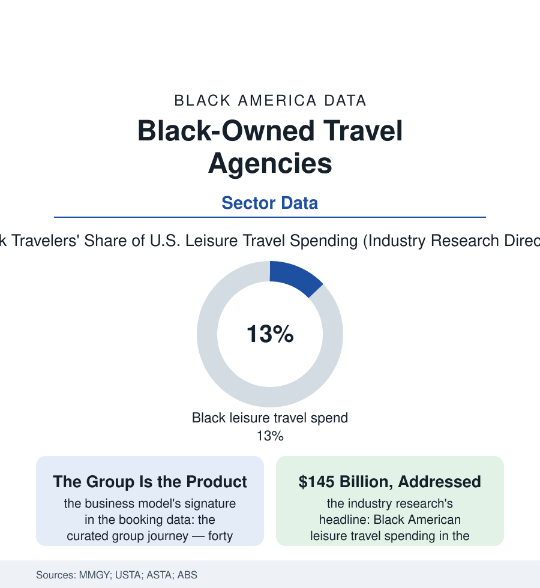

Black Business
The Itinerary File: Black-Owned Travel Agencies and the Black Travel Economy
Black travelers spend well over a hundred billion dollars a year — and the agencies designing those journeys, group by curated group, are substantially Black-owned. The itinerary file.

The travel industry's own research delivered its verdict in dollars: Black Americans spend on the order of $145 billion a year on leisure travel — and for most of the industry's history, almost none of its marketing, product design, or ownership was aimed at them. In the gap grew a sector of Black-owned agencies and travel curators whose model inverted the industry's. This article reads the itinerary file.
The Group Is the Product
The mainstream agency sells a seat and a room; the Black travel curator sells a company — the group journey as the model's core unit in the booking data (the heritage itinerary to Ghana and Senegal built around the door-of-return ceremonies, the Black wine country's harvest weekends, the HBCU homecoming packages, the sisters' and couples' circuits of the Caribbean and the Mediterranean, the Essence and festival charters) — a product whose logistics are formidable and whose real inventory is trust: forty travelers handing five figures and their one vacation a year to an organizer whose reputation the community's networks certify. The economics follow the group: the negotiated blocks and the escort's margin, the payment-plan model (the layaway journey — the deposit-and-installments structure that converted the aspirational trip into a budgeted one, the sector's signature financial innovation for its clientele, years before the fintech industry rebranded it), the repeat cohorts whose annual trip is the agency's annuity (the travel club as subscription before subscriptions). The digital era restructured the storefront without dissolving the model: the independent host-agency advisor — accredited through a host, branded on social, specialized by niche (the destination-wedding specialist, the heritage specialist, the luxury curator at price points the industry data once claimed this market did not contain) — the ABS counting the firms under travel arrangement's codes while the market's living directory is the hashtag and the conference (the Black travel movement's expos and summits, an industry infrastructure built entire within the community in the last generation).
The Market the Industry Measured Late
The profession's own pipeline runs through the file like a boarding line: the host agencies' training programs graduating the side-hustle advisor into the full-time curator, the ASTA chapters and the Black travel associations' certification pushes, the niche's economics rewarding the specialist (the advisor who knows the heritage sites' seasons and the festival charters' contracts) over the generalist the search engines commoditized. It is, in the end, the service file's standard plot with better scenery: expertise plus trust, compounded annually, in matching shirts.
The research shelf explains the opportunity's size and its persistence: the MMGY studies' findings, in their own summary, of a traveler population that travels in groups at the highest rates, spends at parity or above on the trips it takes, chooses destinations substantially on welcome and representation — the safety-and-belonging calculus whose ancestry is the Green Book's, the sundown map's modern form being the review platforms' comment threads and the destination's own record, researched by the traveler and priced into the itinerary by the curator who knows which archives to check — and reports, in the same studies, feeling unseen by the industry's advertising at rates that constitute, in the cold language of the market, an unclaimed nine-figure inefficiency. The mainstream industry's response has arrived in the recent data as the file's validation and its threat: the Black-traveler initiatives of the great booking platforms and hotel brands, the destination marketing organizations' dedicated budgets — the shelf's incumbents answering with the moat the platforms cannot print, which is the group's living trust and the curator's own face at the airport. The forward data add the passport file's rising base — each year's new Black passport holders enlarging the international itinerary's market — and the heritage economy's institutionalization (the Ghana campaigns' measurable conversion of sentiment into arrivals, the ancestry-tourism product lines of the DNA companies' travel arms). The sector's census count is modest. Its revenue per reputation is the envy of the industry that overlooked it, and its product — the journey home, in every sense — has no substitute on any platform's shelf.
Reading the Travel Data
The itinerary file is the business section's departure board: an industry built by serving, deliberately and well, the traveler the industry itself priced and then ignored. MMGY publishes the billions. The group photos — forty travelers in matching shirts before a four-hundred-year-old door, half of them weeping — publish what the billions were for.
More in Black Business
Black-Owned Businesses: Counts, Receipts, and the Representation Gap
About 161,000 Black-owned employer firms and three million solo ventures: how the Census Bureau counts Black business ownership, where firms concentrate, and the gap between population share and business share.
Black Median Net Worth: The Wealth Gap in Federal Reserve Data
The Federal Reserve puts Black median family net worth at $44,900, against $285,000 for White families — about 16 cents on the dollar. The widest gap in economic data.
Black Buying Power: The $1.8 Trillion Consumer Economy
Black buying power is estimated at about $1.8 trillion — larger than the economy of most nations. What the figure measures, who produces it, and what it buys.
Source: MMGY Global Black Traveler research; U.S. Travel Association; American Society of Travel Advisors; U.S. Census Bureau Annual Business Survey.